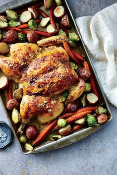
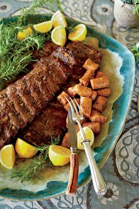

Preheat oven to 425°. Place beef on a wire rack in a jelly-roll pan. Rub butter over beef, and sprinkle with salt and pepper.
Bake at 425° for 25 to 35 minutes or until a meat thermometer inserted into thickest portion registers 135° (medium rare). Cover loosely with aluminum foil; let stand 15 minutes before slicing.
Recipe #2: Garlick Roasted Spatchcock Chicken

Cook Time
70 minutes
Ingredients
1 (5 lb) whole chicken
4 clobes of chopped garlic
1 teaspoon of kosher salt
6 tablespoons of softened salted butter
1 tablespoon of chopped fresh thyme
2 tablespoons of lemon zest
3/4 teaspoon of black pepper
12 ounces of red potatoes
8 ounces of carrots
8 ounces of Brussels sprouts
Directions
Preheat oven to 450°F. Rinse chicken, and pat dry. Place chicken, breast side down, on a cutting board. Using poultry shears, cut along both sides of backbone, and remove backbone. (Discard or reserve for stock.) Turn chicken breast side up, and open the underside of chicken like a book. Using the heel of your hand, press firmly against breastbone until it cracks. Place chicken in a large rimmed baking pan. Tuck wing tips under chicken so they don't burn.
Combine garlic and salt on a cutting board. Using the flat edge of a knife, mash into a paste. Combine garlic paste, butter, thyme, zest, and pepper in a bowl. Set aside 2 tablespoons of the garlic mixture. Rub remaining garlic mixture under skin of chicken breasts and thighs.
Bake chicken in preheated oven 10 minutes. Remove pan from oven. Reduce heat to 400°F. Arrange potatoes and carrots around chicken; return to oven, and bake 20 minutes. Arrange Brussels sprouts around chicken, and spread remaining 2 tablespoons garlic mixture on breasts; return to oven, and bake until a meat thermometer inserted in thickest portion registers 165°F, about 20 minutes. Drizzle with lemon juice, and let stand 10 minutes. Carve chicken, and serve with pan juices.
Recipe #3: Grilled Italian Spareribs

Cook Time
110 minutes
Ingredients
1 tablespoon of fennel seeds
1 teaspoon of crushed red pepper
2 tablespoons of kosher salt
1 (4 to 5lb) slab of pork spareribs
1/4 cup of extra-virgin olive oil
2 tablespoons of fresh lemon juice
2 tablespoons of finely chopped fresh rosemary
1 tablespoon of minced garlic
1 teaspoon of freshly ground black pepper
Directions
Grind together fennel seeds and crushed red pepper in a spice grinder. (If you don't have a spice grinder, use a heavy knife to mince the seeds and red pepper.) Combine ground spices and salt; rub mixture all over the ribs. Cover ribs, and refrigerate 8 hours or overnight, if possible. (If not, rub the ribs a minimum of 2 hours ahead of time.)
Stir together olive oil, lemon juice, rosemary, garlic, and black pepper in a small bowl. Remove the ribs from the refrigerator. Place the ribs on a platter or broiler pan, and pour the marinade from the bowl over it, rubbing it into the meat with your fingers. Let stand at room temperature for at least 1 hour, turning the ribs at least once.
Preheat the broiler or gas grill to high (450°F to 550°F) 15 minutes before you are ready to cook. (If using charcoal, allow it time to form a full coating of white ash.) Place the broiler pan (or the grilling rack, if it's adjustable) about 8 inches from the source of heat. Place spareribs on the pan or grill, and brush with any remaining marinade. Cook for 30 to 35 minutes, turning rack 3 or 4 times.